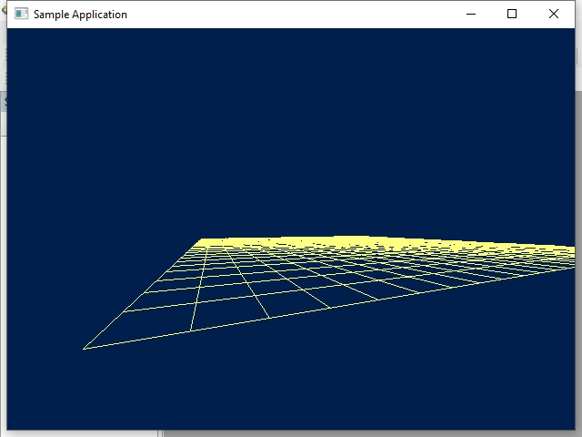

Загрузить архив с примерами ЗДЕСЬ.
Ранее в примере для рисования сетки из линий мы использовали функции GDI MoveToEx() и LineTo(). Эти функции сами производят отсечение в экранных координатах. Например следующий код корректно обрежет и отобразит линию:
#define _WIN32_WINNT 0x0500
#include <windows.h>
#include <stdio.h>
int main(void)
{
HWND hWnd = GetConsoleWindow();
HDC hDC = GetDC(hWnd);
HPEN hPen = CreatePen(PS_SOLID, 4, RGB(255, 255, 127));
HPEN hOldPen = (HPEN) SelectObject(hDC, hPen);
int x1 = 50;
int y1 = 50;
int x2 = -50;
int y2 = 150;
MoveToEx(hDC, x1, y1, NULL);
LineTo(hDC, x2, y2);
getchar();
SelectObject(hDC, hOldPen);
DeleteObject(hPen);
ReleaseDC(hWnd, hDC);
return 0;
}
Теперь в этом примере мы будем сами рисовать линии при помощи алгоритма Брезенхема и нам самим нужно отсекать линии в экраннх координатах. В примере использовалась функция DrawDibDraw. Для клиппинга линий в экранных координатах использвался алгоритм Коэна-Сазерленда.
Код примера можно загрузить /src/03.003-draw_field_brezenhame/Draw_Field_Brezenhame.
После запуска примера перемещатся по сцене можно с помощью клавиш W,S,A,D и поворачивать камеру мышей.
Реализация алгоритма Коэна-Сазерленда: Каждой вершине присваивается код региона. Биты кода указывают на положение точки относительно экранных границ. Внутренний регион (0000) указывает, что точка полностью видима.
1001 | 1000 | 1010 ------------------- 0001 | 0000 | 0010 ------------------- 0101 | 0100 | 0110
#include <iostream>
const int LEFT = 1; // 0001
const int RIGHT = 2; // 0010
const int TOP = 4; // 0100
const int BOTTOM = 8; // 1000
int ComputeCode(int x, int y, int left, int right, int top, int bottom)
{
int code = 0;
if (x < left) code |= LEFT;
if (x > right) code |= RIGHT;
if (y < top) code |= TOP;
if (y > bottom) code |= BOTTOM;
return code;
}
void CohenSutherlandClip(int x1, int y1, int x2, int y2,
int left, int right, int top, int bottom)
{
int code1 = ComputeCode(x1, y1, left, right, top, bottom);
int code2 = ComputeCode(x2, y2, left, right, top, bottom);
bool accept = false;
while (true)
{
if (!(code1 | code2)) // Оба конца внутри окна
{
accept = true;
break;
}
else if (code1 & code2) // Оба конца вне окна в одном направлении
{
break;
}
else
{
int codeOut;
int x, y;
if (code1 != 0)
codeOut = code1;
else
codeOut = code2;
if (codeOut & TOP)
{
x = x1 + (x2 - x1) * (top - y1) / (y2 - y1);
y = top;
}
else if (codeOut & BOTTOM)
{
x = x1 + (x2 - x1) * (bottom - y1) / (y2 - y1);
y = bottom;
}
else if (codeOut & RIGHT)
{
y = y1 + (y2 - y1) * (right - x1) / (x2 - x1);
x = right;
}
else if (codeOut & LEFT)
{
y = y1 + (y2 - y1) * (left - x1) / (x2 - x1);
x = left;
}
if (codeOut == code1)
{
x1 = x;
y1 = y;
code1 = ComputeCode(x1, y1, left, right, top, bottom);
}
else
{
x2 = x;
y2 = y;
code2 = ComputeCode(x2, y2, left, right, top, bottom);
}
}
}
if (accept)
{
std::cout << "Clipped Line: (" << x1 << ", " << y1 << ") to (" << x2 << ", " << y2 << ")" << std::endl;
}
else
{
std::cout << "Line is outside the clipping area" << std::endl;
}
}